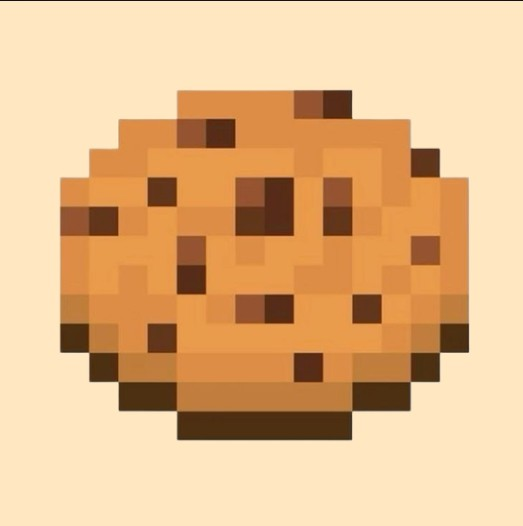
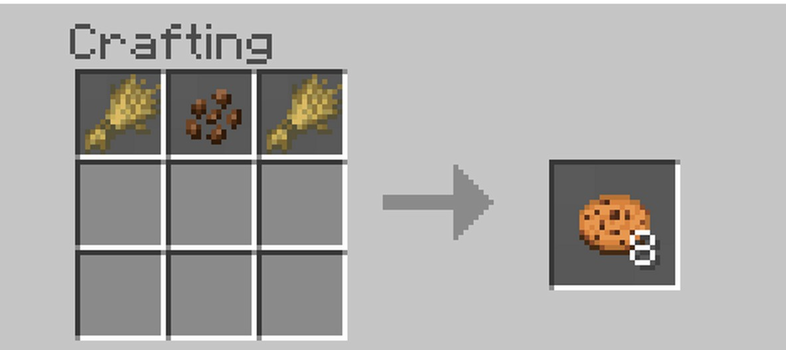

Cookie
INGREDIENTES
- Farinha – 2 xícaras
- Açúcar – ½ xícara
- Açúcar mascavo – ½ xícara
- Manteiga – 120 g
- Ovo – 1
- Baunilha – 1 colher (chá)
- Fermento – 1 colher (chá)
- Gotas de chocolate – 1 xícara

INGREDIENTES

Obtido plantando sementes em terra arada próxima à água e colhendo após crescimento.
Encontrado naturalmente nos troncos das árvores no bioma de selva.